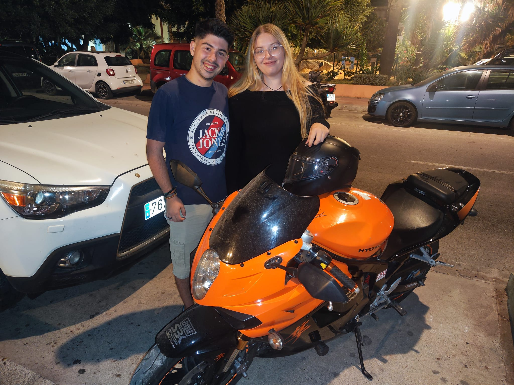

Hola, amor mío.
Una vez más, quiero darte las gracias por todo lo que hemos vivido. Si hoy puedes ver esto así es porque tú me has dado las ganas de seguir adelante. Esto ya no está hecho con un programa de internet, sino con mi puño y letra. Y gracias al enlace que te he dado, puedes ver todo esto.
Y es que mi vida ha cambiado desde que te conocí. Antes no tenía preocupación ninguna, ni pasión, ni ganas de hacer nada. Sin embargo, fue llegar tú y poco a poco fuiste devolviéndole la paz a mi alma. Poco a poco fui sanando, poco a poco fui mejorando y aunque todavía nos quede mucho camino por delante, estoy dispuesto a trabajar todo lo que haga falta para poder tener un futuro contigo
Tengo que darte las gracias por tanto que has hecho por mí. Gracias por ser mi consejera, mi protectora, mi razón de ser y mis ganas de vivir. Gracias por darme la fuerza que me hacía falta, por ayudarme a batir mis alas, por tranquilizarme cuando lo necesito, por enseñarme a amar y, sobretodo, por devolverle el brillo a mi corazón
Gracias por hacerme feliz. Con cariño: tu loco enamorado
